BonsaiDb Commerce Benchmark
small, readheavy, 2 agent(s)
Configuration
Initial Data Set
| Type |
Count |
| Products |
100 |
| Categories |
10 |
| Customers |
100 |
| Orders |
125 |
Summary
| Backend |
Total Time |
Wall Time |
Transport |
| bonsaidb-local |
613.7ms |
306.9ms |
None |
| bonsaidb-quic |
3.304s |
1.652s |
UDP with TLS |
| bonsaidb-ws |
1.696s |
848.2ms |
TCP |
| postgresql |
7.082s |
3.541s |
TCP |
Table of Contents:
Operation Results
Measures the time spent loading the initial data set and performing any pre-cache operations that most database administrators would perform on their databases periodically to ensure good performance.
| Backend |
Avg |
Min |
Max |
StdDev |
| bonsaidb-local |
8.018ms |
8.016ms |
8.020ms |
0s |
| bonsaidb-quic |
15.71ms |
15.70ms |
15.71ms |
0s |
| bonsaidb-ws |
12.55ms |
12.55ms |
12.56ms |
0s |
| postgresql |
628.9ms |
628.6ms |
629.1ms |
0s |
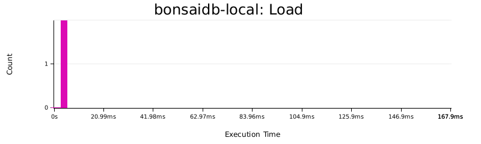
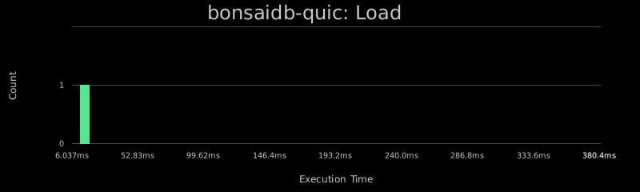
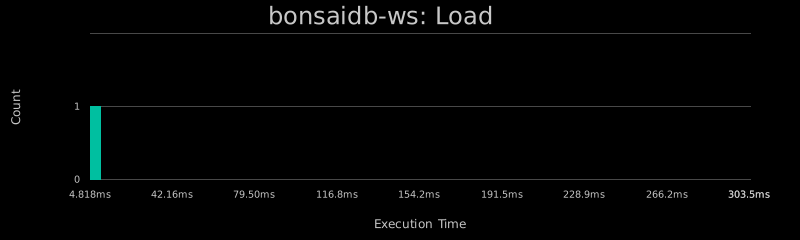
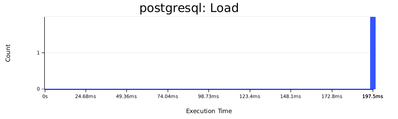
Meaures the time spent looking up a product by its id. This operation is meant to simulate the basic needs of the database to provide a product details page after a user clicked a direct link that contians the product's unique id, including the product's current rating.
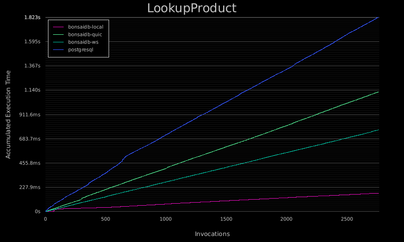
| Backend |
Avg |
Min |
Max |
StdDev |
| bonsaidb-local |
53.30us |
17.20us |
877.1us |
35.73us |
| bonsaidb-quic |
445.6us |
208.8us |
12.13ms |
551.0us |
| bonsaidb-ws |
214.4us |
130.5us |
5.345ms |
165.3us |
| postgresql |
772.0us |
251.0us |
24.10ms |
1.032ms |
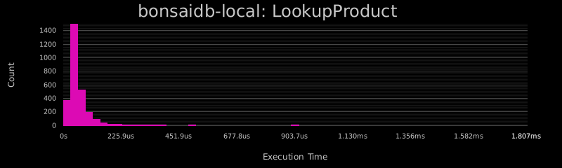
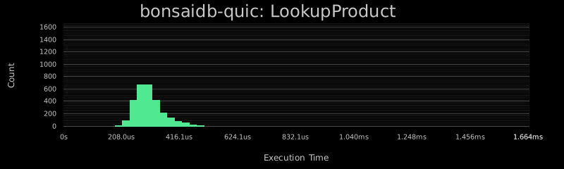
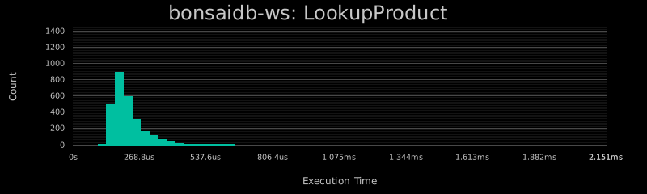
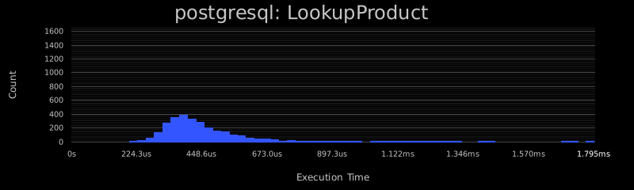
Measures the time spent looking up a product by its name (exact match, indexed). This operation is meant to simulate the basic needs of the database to provide a product details after finding a product by its name, including the product's current rating.
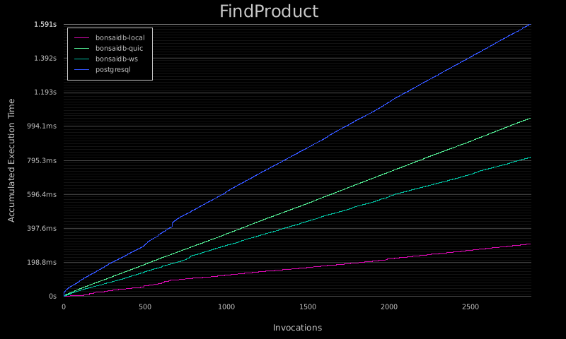
| Backend |
Avg |
Min |
Max |
StdDev |
| bonsaidb-local |
94.91us |
32.00us |
4.121ms |
99.84us |
| bonsaidb-quic |
501.8us |
241.0us |
16.92ms |
679.1us |
| bonsaidb-ws |
260.6us |
147.5us |
3.656ms |
130.3us |
| postgresql |
844.9us |
295.2us |
36.57ms |
1.427ms |
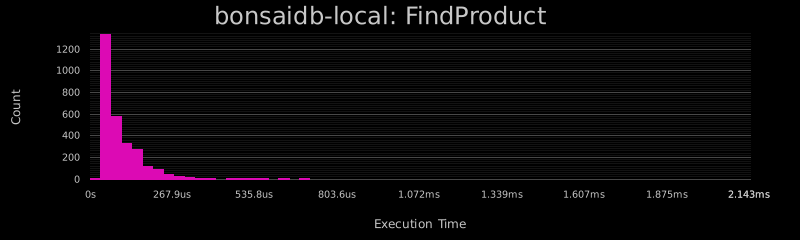
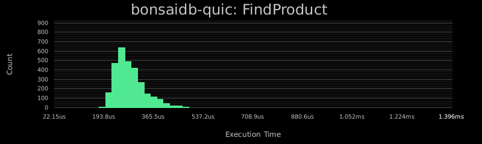
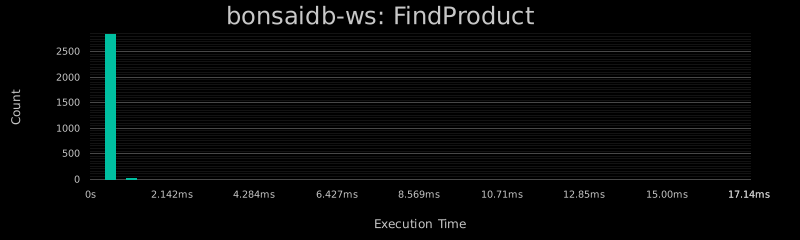
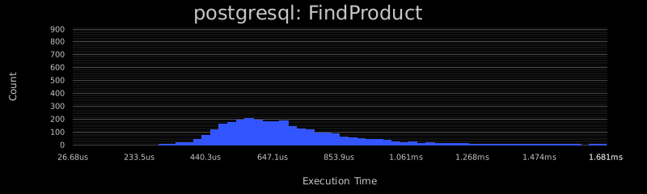
Measures the time spent creating a shopping cart.
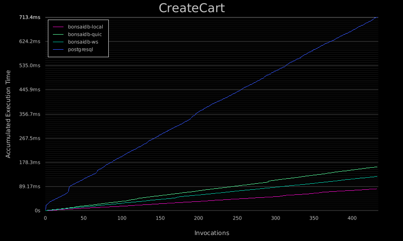
| Backend |
Avg |
Min |
Max |
StdDev |
| bonsaidb-local |
144.4us |
72.77us |
615.9us |
62.14us |
| bonsaidb-quic |
426.7us |
198.5us |
5.796ms |
540.3us |
| bonsaidb-ws |
238.7us |
152.6us |
2.873ms |
136.1us |
| postgresql |
1.774ms |
806.9us |
13.60ms |
1.363ms |
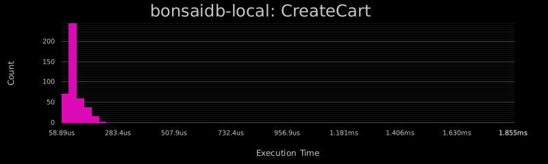
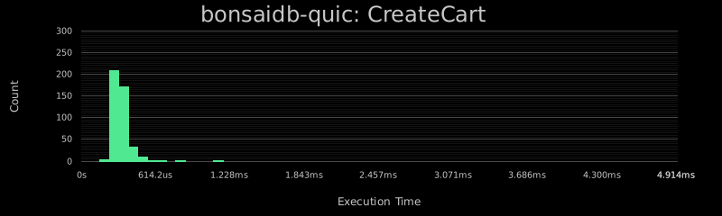
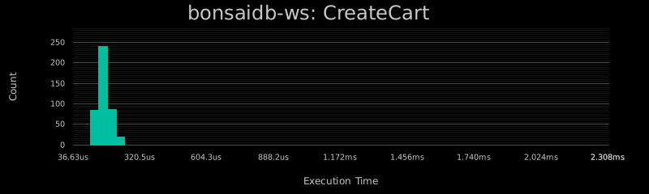
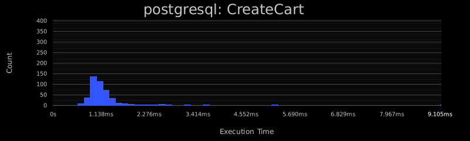
Measures the time spent adding a product to a shopping cart.
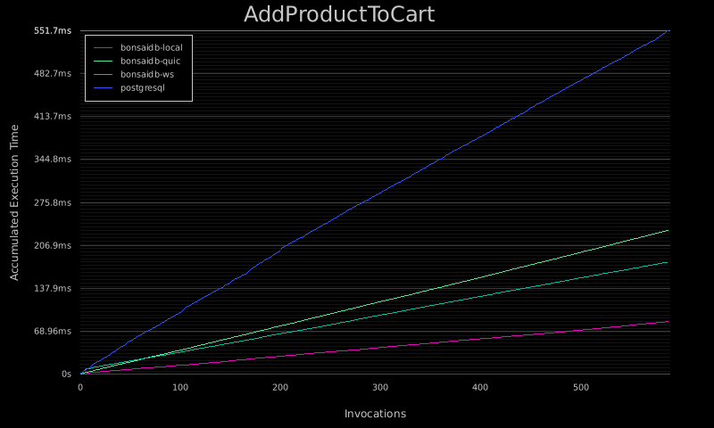
| Backend |
Avg |
Min |
Max |
StdDev |
| bonsaidb-local |
185.0us |
90.37us |
4.198ms |
182.8us |
| bonsaidb-quic |
671.4us |
346.1us |
8.348ms |
637.8us |
| bonsaidb-ws |
365.7us |
246.0us |
3.711ms |
207.5us |
| postgresql |
1.746ms |
721.9us |
33.28ms |
2.073ms |
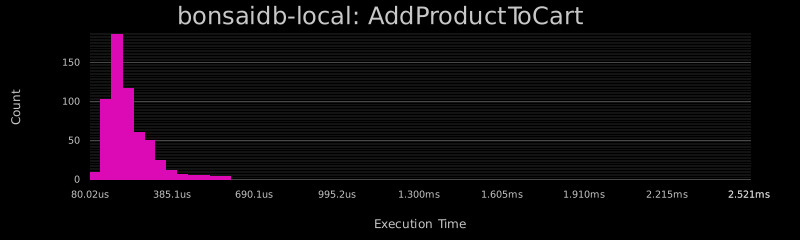
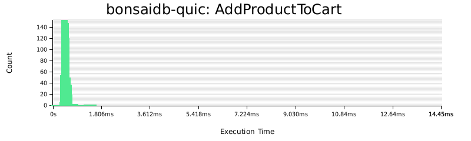
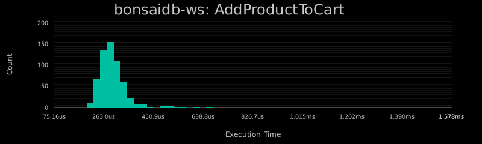
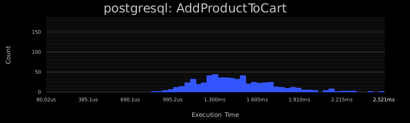
Measures the time spent converting a shopping cart into an order for a customer.
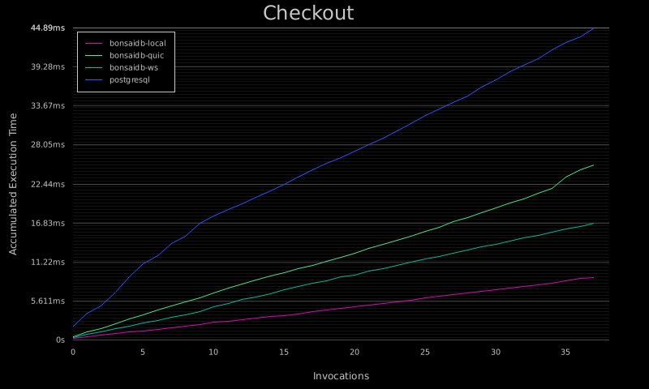
| Backend |
Avg |
Min |
Max |
StdDev |
| bonsaidb-local |
292.0us |
193.3us |
769.5us |
93.55us |
| bonsaidb-quic |
826.2us |
561.7us |
1.334ms |
157.7us |
| bonsaidb-ws |
549.4us |
446.0us |
752.1us |
65.77us |
| postgresql |
1.955ms |
755.7us |
6.046ms |
1.220ms |
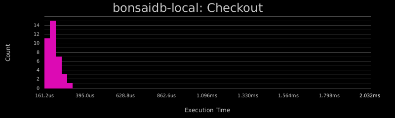
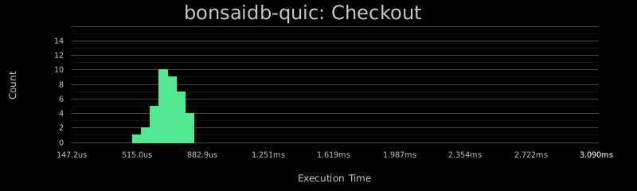
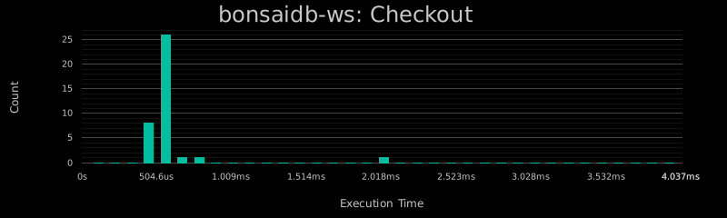
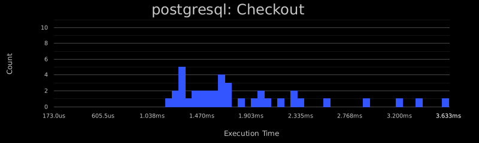
Measures the time spent adding or updating a review of a product by a customer. Each customer can only have one review per product. When this operation is complete, all subsequent calls to LookupProduct and FindProduct should reflect the new rating. This simulates an 'upsert' (insert or update) operation using a unique index.
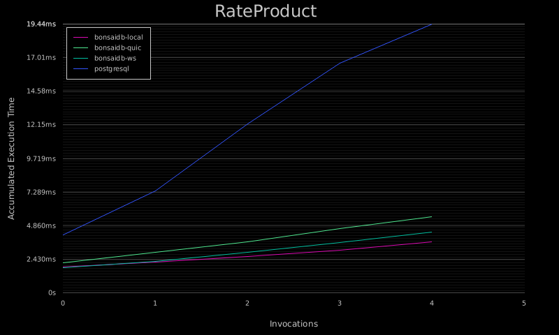
| Backend |
Avg |
Min |
Max |
StdDev |
| bonsaidb-local |
777.3us |
455.7us |
1.917ms |
571.0us |
| bonsaidb-quic |
1.329ms |
840.2us |
2.753ms |
717.3us |
| bonsaidb-ws |
946.5us |
560.1us |
2.210ms |
632.9us |
| postgresql |
5.464ms |
3.998ms |
7.598ms |
1.492ms |
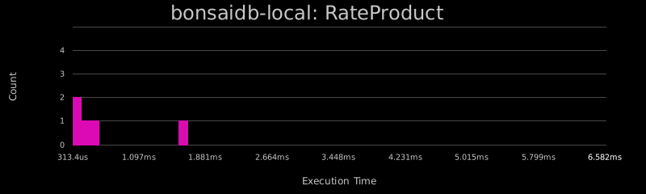
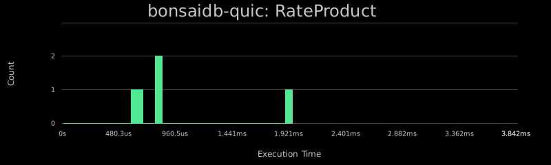
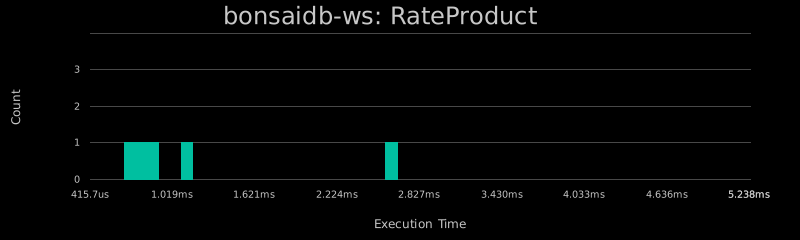
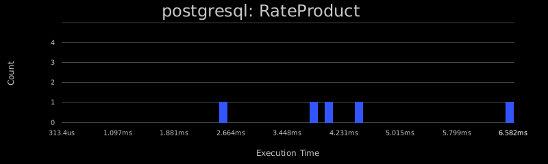